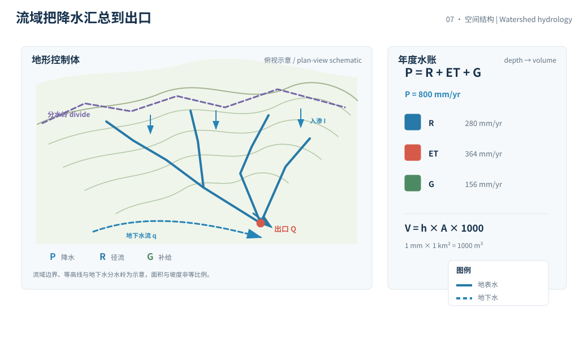
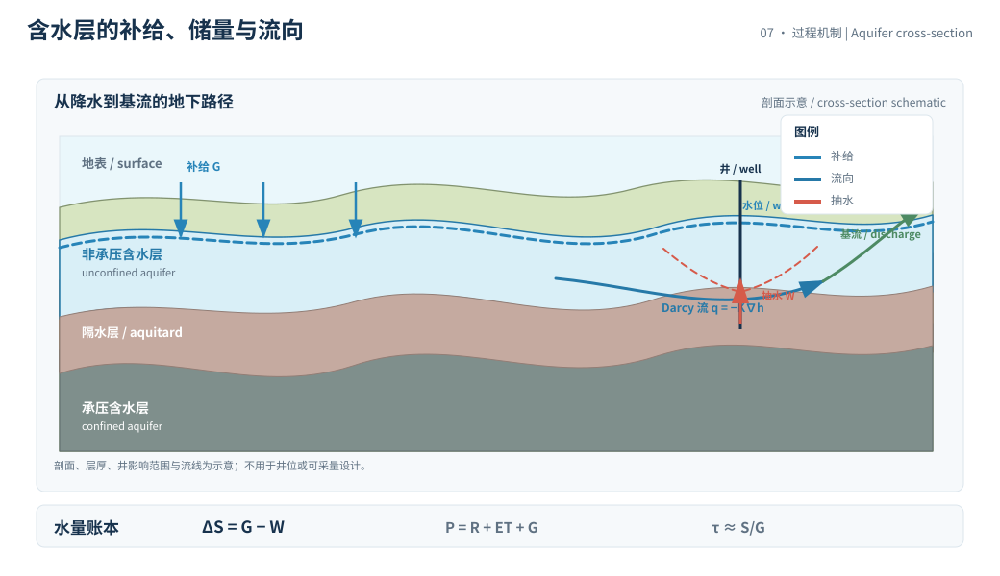

本页目录
地表 II · 河流、流域与地下水
一场雨落下后，水不会只有“流进河里”这一条路。它可以被植被蒸散、进入土壤、沿坡面快速汇流，或缓慢补给含水层，再以基流返回河道。流域水文学的第一步，是把深度、体积、储量和时间尺度放进同一张账本。
学习层：同样的降水，为什么河流和含水层会不同步
1. 具体情境：一座流域的年度水账
给定一个流域边界和一个年度水文窗口：降水落在面积上，部分成为快速径流，部分进入土壤和地下水，剩余通过蒸散回到大气。与此同时，抽水把含水层中的水移出。管理者想知道：年末地下水是在补给、持平还是下降？流域变大时，河流体积和水深会怎样缩放？
实验输入是教学设定，不是某个流域的预报。真实结论必须标明流域边界、测站、时间窗、降水基准、抽水量估算方法、基流分离方法和核验日期。
2. 揭示前预测：深度、面积和储量
打开实验前，先预测：
- 在降水深度和土地条件不变时，把流域面积加倍，径流深度加倍还是径流体积加倍？
- 若抽水量大于地下水补给量，含水层储量会增加还是减少？
- 增大产流系数，是否会让地下水补给也必然增加？
- 河流当前流量能否直接等同于当前降水量？
提交后，实验将快速径流、补给、蒸散和抽水分别列账，并同时画出河道与含水层。这样能把“降水很多”与“地下水正在恢复”分开。
3. 公式桥：水量平衡、面积换算和地下水通量
以水深表示的年度水量平衡可以写成
其中 \(P\) 是降水，\(R\) 是地表径流深，\(ET\) 是蒸散，\(G\) 是进入含水层的补给深度。一个透明的教学分配是
\(c\) 为产流系数，\(f\) 为入渗水中最终补给含水层的比例。含水层储量变化还要扣除抽水 \(W\)：
深度转体积时，\(1\) mm 水深落在 \(1\) km\(^2\) 上等于 \(1000\) m\(^3\)，所以
储量很大而补给通量有限时，可用 \(\tau=S/G\) 估算含水层的水量记忆。地下水流向则由水力梯度控制，Darcy 定律的局部形式为
其中 \(K\) 是水力传导系数，\(h\) 是水头。水量平衡告诉我们“多少”，Darcy 流告诉我们“往哪里、以什么阻力”。
数量级换算很关键：一场 \(10\) mm 降水在 \(100\) km\(^2\) 上已经是 \(1.0\times10^6\) m\(^3\) 的水；但其中只有一部分进入河道或含水层，且时间可能从小时延迟到多年。
4. 互动实验：让河流和地下水同时结算
无 JavaScript 时的静态 fallback：教学设定为降水 \(P=800\) mm/yr、流域面积 \(A=100\) km\(^2\)、产流系数 \(c=0.35\)、入渗水补给比例 \(f=0.30\)、抽水 \(W=180\) mm/yr、初始含水层储量 \(S=5000\) mm。于是径流深 \(R=280\) mm/yr，补给 \(G=156\) mm/yr，蒸散 \(ET=364\) mm/yr，储量变化 \(\Delta S=-24\) mm/yr；对应补给体积 \(15.6\) million m\(^3\)/yr、抽水体积 \(18.0\) million m\(^3\)/yr，水量账本显示地下水下降代理。
| 账本项 | 默认结果 | 单位 / 解释 |
|---|---|---|
| 降水 \(P\) | 800 | mm/yr，教学输入 |
| 径流深 \(R\) | 280 | mm/yr |
| 地下水补给 \(G\) | 156 | mm/yr |
| 蒸散 \(ET\) | 364 | mm/yr，剩余项 |
| 补给体积 | 15.6 | million m³/yr，\(A=100\) km² |
| 抽水体积 | 18.0 | million m³/yr |
| 储量变化 \(\Delta S\) | -24 | mm/yr，下降代理 |
| \(S/G\) | 32.1 | 年，粗略水量记忆 |
“million m³”是单位换算结果，不是某个真实流域的动态观测值；真实年度数字需标指标年、参考基准和核验日期。
5. 边界：水量平衡不能单独给出洪水或井位答案
- 时间聚合会隐藏峰值：年平衡可能闭合，但小时级暴雨仍能造成洪峰；河道响应还受坡度、河网、土壤湿度和蓄滞洪空间控制。
- 产流系数不是常数：土地覆盖、冻土、前期湿润度和降雨强度都会改变 \(c\)；城市化常改变汇流时间与不透水面积。
- 补给有滞后和路径：入渗水未必在同一年到达深层含水层，含水层边界也可能跨越地表流域边界。
- 抽水量有测量误差：井群取水、回灌、灌溉回流和地下水与河流交换都要进入边界；只拿井水位下降就断言“降水减少”是不充分的。
所以实验的下降或上升只是水量平衡代理，不是洪水预警、井位设计或地下水可采量许可。真实模型需要时空分辨率、地下结构、观测井和不确定度。
6. 迁移：从流域账本到风险决策
把降水换成融雪、灌溉回流或城市排水，公式仍可用，但边界和时滞必须重写。把储量变化接到生态、农业和城市供水，则要进一步区分 hazard、exposure 和 vulnerability，而不是只看一条流量曲线。
迁移题：若年降水不变但暴雨更集中，为什么年水量平衡可能近似不变而洪峰风险上升？若井水位下降但河流基流没有同幅下降，哪些地下水通道或储量定义可能被遗漏？你会增加哪一个观测来识别补给滞后？


1. 河流把空间汇总成出口
流域是以地形和地下水分水岭定义的控制体。流量是出口处的体积/时间，径流深是把出口体积除以面积后的等效深度。两个流域的流量不能直接比较，除非面积、时间窗和汇流定义都清楚。
河流中的水既可能来自刚刚落下的降水，也可能来自土壤排水、融雪、湖泊调蓄和地下水基流。水文过程的“年龄”与流量的瞬时大小是不同变量。
2. 含水层的储量与水位
水位变化不等于储量变化的简单一比一映射。非承压含水层需要考虑比给水度，承压含水层还涉及储水系数、压缩性和水头变化。井的局地信号又会叠加抽水、潮汐、气压和季节补给。
Darcy 流方程、质量守恒和含水层几何共同决定地下水路径。一个看似合理的年度补给数，若没有边界、层厚和水力参数，也不能直接转成可采量。
3. 证据纪律
降水、河流流量、土壤湿度、卫星重力、井水位和抽水统计各自测量不同对象。引用动态水文数字时应标观测年份或窗口、参考基准、数据产品版本、不确定度和核验日期。NOAA 与 USGS 的水循环、河流和地下水资料，以及 NASA 的遥感资料，是优先查证入口。
本页所有默认数值都是教学输入。若将实验换成真实流域，第一步不是调参数，而是先建立可审计的边界和数据字典。
4. 小结
流域账本先用 \(P=R+ET+G\) 分配降水，再用 \(\Delta S=G-W\) 判断地下水方向，最后用面积换算和 Darcy 流解释空间与时滞。至此，课程主线从储库、深时和深部成像走到被水重写的地表；后续章节可以在同一语法上继续接入冰、海洋、大气与碳循环。